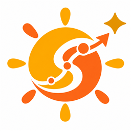

<!DOCTYPE html>
<html lang="zh-Hant">
<head>
<meta charset="utf-8">
<meta name="viewport" content="width=device-width,initial-scale=1,viewport-fit=cover">
<meta name="apple-mobile-web-app-capable" content="yes">
<meta name="theme-color" content="#3D9BE9">
<title>訂正紀錄・SUNNY魔法數學</title>
<link rel="icon" href="icon-180.png">
<link rel="apple-touch-icon" href="icon-180.png">
<meta name="apple-mobile-web-app-title" content="訂正紀錄">
<link rel="manifest" href="manifest.json">
<style>
/* 2026-11-02 SUNNY：各班完成訂正紀錄；三年級、四年級、五年級B 打勾順便寵物蛋加點
   2026-11-24 改版：班級 → 講義／單元複習／期末評量／考古卷 → 一張一張；平板上課離線也能勾，回家連網自動上傳 */
* { box-sizing: border-box; -webkit-tap-highlight-color: transparent; }
body { margin: 0; font-family: 'PingFang TC', 'Noto Sans TC', system-ui, -apple-system, sans-serif;
  background: var(--bg); color: var(--text); min-height: 100vh; }
button { font: inherit; cursor: pointer; }
.wrap { max-width: 1100px; margin: 0 auto; padding: 12px 14px 90px; }
header { display: flex; align-items: center; gap: 10px; margin-bottom: 10px; }
header img { width: 34px; height: 34px; object-fit: contain; opacity: .9; }
header h1 { font-size: 20px; margin: 0; color: var(--main); letter-spacing: 1px; }
header .sub { font-size: 12px; opacity: .6; margin-left: auto; }
header .home { border: 2px solid var(--main); background: #fff; color: var(--main); border-radius: 18px; padding: 5px 12px; font-size: 14px; font-weight: 700; }
.howto { display: flex; align-items: center; gap: 12px; font-size: 17px; margin: 10px 0; }
.howto b.n { flex: none; width: 30px; height: 30px; border-radius: 50%; background: var(--main); color: #fff; display: flex; align-items: center; justify-content: center; }
.howto svg { vertical-align: middle; }

.net { display: flex; align-items: center; gap: 10px; border-radius: 14px; padding: 8px 12px; margin: 0 0 10px; font-size: 15px; font-weight: 600; }
.net.off { background: #EEF1F5; color: #4A5568; border: 2px solid #CBD5E0; }
.net.wait { background: #FFF8E1; color: #7A5A00; border: 2px solid #FFD666; }
.net .btn { margin-left: auto; }

.tabs, .chips { display: flex; gap: 8px; overflow-x: auto; padding: 2px 0 8px; scrollbar-width: none; }
.tabs::-webkit-scrollbar, .chips::-webkit-scrollbar { display: none; }
.tab { flex: none; border: 2px solid var(--line); background: #fff; color: var(--text); border-radius: 22px;
  padding: 8px 16px; font-size: 16px; font-weight: 700; }
.tab.on { background: var(--main); border-color: var(--main); color: #fff; }
.tab.peek { margin-left: auto; border-color: #E2E8F0; color: #A0AEC0; font-size: 13px; padding: 8px 12px; background: #fff8; }
.tab.peek.on { background: #FFF4E5; border-color: #FFB547; color: #C2410C; }
.cats { display: grid; grid-template-columns: repeat(4, 1fr); gap: 6px; background: #fff9; border-radius: 16px; padding: 5px; margin: 4px 0 10px; }
.cat { border: 0; background: transparent; color: var(--text); border-radius: 12px; padding: 10px 4px; font-size: 17px; font-weight: 700; }
.cat.on { background: #fff; color: var(--main); box-shadow: 0 2px 8px #0002, 0 0 0 2px var(--main) inset; }
.chips { flex-wrap: wrap; overflow: visible; }
.chip { flex: none; border: 2px solid var(--line); background: #fffc; color: var(--text); border-radius: 14px;
  padding: 7px 14px; font-size: 15px; font-weight: 600; text-align: left; line-height: 1.3; }
.chip small { display: block; font-size: 11px; font-weight: 500; opacity: .65; }
.chip.on { border-color: var(--main); background: #fff; box-shadow: 0 0 0 2px var(--main) inset; }
.chip.done small { color: #22A06B; opacity: 1; font-weight: 700; }
.chip.add { border-style: dashed; color: var(--main); background: #fff6; }
.chip.tool { border-style: dashed; background: #fff6; opacity: .8; }
.chip.fold { background: transparent; border-color: transparent; opacity: .7; padding-left: 4px; }
.chip.old { opacity: .6; background: #F3F4F6; }
.chip.old.on { opacity: 1; }
.mrow { display: flex; align-items: center; gap: 8px; padding: 8px 0; border-bottom: 1px solid #EEF2F6; font-size: 16px; }
.mrow span { flex: 1; font-weight: 600; }
.mrow.old span { opacity: .45; }

.bar { display: flex; align-items: center; gap: 8px; flex-wrap: wrap; margin: 8px 0 10px; }
.bar h2 { font-size: 20px; margin: 0; }
.bar .cnt { font-size: 15px; font-weight: 700; color: var(--main); }
.btn { border: 2px solid var(--line); background: #fff; color: var(--text); border-radius: 10px; padding: 6px 12px; font-size: 14px; font-weight: 600; }
.btn.main { background: var(--main); border-color: var(--main); color: #fff; }
.btn.danger { color: #E5484D; border-color: #F5C2C4; }
.pet { margin-left: auto; display: flex; align-items: center; gap: 6px; font-size: 14px; font-weight: 600;
  background: #fff; border: 2px solid var(--line); border-radius: 20px; padding: 4px 12px; }
.pet input { width: 20px; height: 20px; accent-color: var(--main); }

.kids { display: grid; grid-template-columns: repeat(auto-fill, minmax(150px, 1fr)); gap: 10px; }
.kid { position: relative; display: flex; align-items: center; gap: 10px; border: 2px solid #E2E8F0; background: #fff; color: var(--text);
  border-radius: 16px; padding: 14px 12px; min-height: 64px; font-size: 19px; font-weight: 700; text-align: left; user-select: none; }
.kid .no { font-size: 12px; opacity: .4; width: 18px; text-align: right; flex: none; }
.kid .box { margin-left: auto; flex: none; width: 34px; height: 34px; border-radius: 10px; border: 2px solid #CBD5E0; display: flex; align-items: center; justify-content: center; font-size: 24px; }
.kid.ok { background: #EAFBF1; border-color: #9BE3BC; }
.kid.ok .box { border: 0; }
.kid.last { border-color: #FFB547; background: #FFF4E5; }
.kid .tag { position: absolute; top: -9px; left: 10px; font-size: 11px; background: #FFB547; color: #fff; border-radius: 8px; padding: 1px 7px; }
.kid .tag.late { background: #F5A524; }
.kid .tag.drag { background: #E5484D; }
.kid.drag { border-color: #F5A3A5; background: #FFF1F1; }
.presets button.on { background: var(--main); border-color: var(--main); color: #fff; }
.preview { margin-top: 10px; font-size: 14px; background: #F5F8FB; border-radius: 10px; padding: 8px 10px; }
.kid .up { position: absolute; top: 4px; right: 6px; font-size: 11px; opacity: .55; }

.left { margin-top: 14px; background: #fffc; border-radius: 12px; padding: 10px 14px; font-size: 15px; }
.left .all { color: #22A06B; font-weight: 700; }
.left .lastline { color: #C2410C; font-weight: 700; }

.watch { background: #FFF4E5; border: 2px solid #FFB547; border-radius: 14px; padding: 10px 12px; margin: 0 0 12px; }
.watch h3 { margin: 0 0 6px; font-size: 15px; color: #C2410C; }
.watch button { display: block; width: 100%; text-align: left; border: 0; background: #fff; border-radius: 10px; padding: 8px 10px; margin-top: 6px; font-size: 15px; color: #5A3B00; }
.watch button small { opacity: .6; font-size: 12px; }
.watch .hint { font-size: 12px; opacity: .7; margin-top: 6px; }
.empty { text-align: center; padding: 50px 10px; opacity: .7; font-size: 16px; line-height: 1.8; }

.mask { position: fixed; inset: 0; background: #0006; display: flex; align-items: flex-end; justify-content: center; z-index: 9; }
.sheet { background: #fff; width: 100%; max-width: 560px; border-radius: 20px 20px 0 0; padding: 18px 16px calc(18px + env(safe-area-inset-bottom));
  max-height: 88vh; overflow: auto; }
@media (min-width: 700px) { .mask { align-items: center; } .sheet { border-radius: 20px; } }
.sheet h3 { margin: 0 0 12px; color: var(--main); }
.sheet label { display: block; font-size: 13px; font-weight: 700; margin: 12px 0 6px; opacity: .75; }
.sheet input[type=text] { width: 100%; font-size: 17px; padding: 10px 12px; border: 2px solid var(--line); border-radius: 10px; outline: none; }
.sheet input:focus { border-color: var(--main); }
.presets { display: flex; flex-wrap: wrap; gap: 6px; margin-top: 8px; }
.presets button { border: 2px solid var(--line); background: #fff; border-radius: 10px; padding: 6px 10px; font-size: 14px; color: var(--text); }
.row { display: flex; gap: 8px; justify-content: flex-end; margin-top: 18px; }
.row .grow { flex: 1; }

.toast { position: fixed; left: 50%; bottom: 24px; transform: translateX(-50%); background: #2D3748; color: #fff;
  padding: 10px 18px; border-radius: 22px; font-size: 15px; z-index: 20; box-shadow: 0 4px 14px #0003; max-width: 90vw; text-align: center; }
.login { max-width: 360px; margin: 80px auto; background: #fff; border-radius: 20px; padding: 24px; box-shadow: 0 4px 20px #0001; text-align: center; }
.login img { width: 80px; }
.login input { width: 100%; font-size: 20px; padding: 12px; border: 2px solid var(--line); border-radius: 12px; text-align: center; margin: 14px 0; }

/* 2026-11-26 課堂狀況：手機（375px）優先，平板再放大 */
.modes { display: grid; grid-template-columns: 1fr 1fr; gap: 8px; margin: 2px 0 10px; }
.mode { border: 2px solid var(--line); background: #fff8; color: var(--text); border-radius: 14px; padding: 11px 6px; font-size: 17px; font-weight: 700; opacity: .8; }
.mode.on { background: #fff; color: var(--main); border-color: var(--main); opacity: 1; box-shadow: 0 2px 10px #0001; }
.stbar { position: sticky; top: 0; z-index: 5; display: flex; align-items: center; gap: 6px; margin: 0 -14px 10px; padding: 8px 14px;
  background: #ffffffe8; backdrop-filter: blur(6px); -webkit-backdrop-filter: blur(6px); border-bottom: 1px solid #0000000d; }
.stbar .nav { width: 44px; height: 44px; flex: none; border: 2px solid var(--line); background: #fff; border-radius: 12px; font-size: 22px; color: var(--main); font-weight: 700; padding: 0; }
.stbar .nav:disabled { opacity: .3; }
.stbar .day { flex: 1; text-align: center; font-size: 18px; font-weight: 800; line-height: 1.15; }
.stbar .day small { display: block; font-size: 12px; font-weight: 600; opacity: .6; }
.stbar .day button { border: 0; background: var(--main); color: #fff; border-radius: 10px; font-size: 12px; padding: 2px 8px; margin-top: 2px; }
.seg { display: grid; grid-template-columns: 1fr 1fr; background: #0000000a; border-radius: 12px; padding: 3px; margin: 0 0 10px; }
.seg button { border: 0; background: transparent; border-radius: 10px; padding: 9px 4px; font-size: 16px; font-weight: 700; color: var(--text); opacity: .7; }
.seg button.on { background: #fff; color: var(--main); opacity: 1; box-shadow: 0 1px 4px #0002; }
.kids.st { grid-template-columns: repeat(3, 1fr); gap: 8px; }
@media (min-width: 600px) { .kids.st { grid-template-columns: repeat(auto-fill, minmax(150px, 1fr)); gap: 10px; } }
.stk { position: relative; display: flex; flex-direction: column; align-items: flex-start; justify-content: center; gap: 6px; border: 2px solid #E2E8F0; background: #fff;
  color: var(--text); border-radius: 16px; padding: 10px 10px 9px; min-height: 66px; font-size: 18px; font-weight: 700; text-align: left; user-select: none; word-break: break-all; }
.stk .no { position: absolute; top: 5px; right: 8px; font-size: 11px; opacity: .35; }
.stk.has { border-color: #CBD5E0; background: #F8FAFC; }
.stk .up { position: absolute; bottom: 4px; right: 6px; font-size: 10px; opacity: .55; }
.dots { display: flex; gap: 4px; align-items: center; min-height: 10px; }
.dot { width: 11px; height: 11px; border-radius: 50%; flex: none; }
.dots small { font-size: 11px; opacity: .6; font-weight: 700; }
.sthint { font-size: 13px; opacity: .6; text-align: center; margin: 12px 0 0; }
.sthead { display: flex; align-items: baseline; gap: 10px; margin: 0 0 12px; }
.sthead b { font-size: 28px; color: var(--main); }
.sthead span { font-size: 15px; opacity: .65; font-weight: 600; }
.stgrid { display: grid; grid-template-columns: 1fr 1fr; gap: 8px; }
.stb { display: flex; align-items: center; gap: 8px; border: 2px solid #E2E8F0; background: #fff; color: var(--text); border-radius: 14px;
  min-height: 58px; padding: 8px 10px; font-size: 17px; font-weight: 700; text-align: left; }
.stb i { font-style: normal; font-size: 22px; flex: none; }
.stb .ck { margin-left: auto; width: 24px; height: 24px; border-radius: 50%; border: 2px solid #CBD5E0; flex: none; display: flex; align-items: center; justify-content: center; font-size: 14px; color: transparent; }
.stb.on { background: var(--c); border-color: var(--c); color: #fff; }
.stb.on .ck { border-color: #fff; background: #fff; color: var(--c); }
.sheet .memo { width: 100%; font-size: 17px; padding: 12px; border: 2px solid var(--line); border-radius: 12px; outline: none; margin-top: 12px; }
.sheet .memo:focus { border-color: var(--main); }
.strecent { font-size: 13px; opacity: .7; margin-top: 10px; }
.btn.big { flex: 1; padding: 13px; font-size: 18px; border-radius: 14px; }
.lcard > button { display: block; width: 100%; border: 0; background: transparent; padding: 0; color: inherit; text-align: left; font: inherit; }
.tl button { flex: none; border: 0; background: transparent; font-size: 13px; color: var(--main); font-weight: 700; padding: 2px 4px; }
.lmore { text-align: center; font-size: 14px; opacity: .65; margin: 12px 0; }
.lcard { display: block; width: 100%; text-align: left; border: 2px solid #E2E8F0; background: #fff; color: var(--text); border-radius: 16px; padding: 12px 14px; margin-bottom: 8px; font-size: 17px; }
.lcard.warn { border-color: #FFB547; background: #FFF8EE; }
.lcard .top { display: flex; align-items: center; gap: 8px; font-weight: 800; }
.lcard .top .n { margin-left: auto; font-size: 14px; font-weight: 700; opacity: .7; }
.lcard .tg { display: flex; flex-wrap: wrap; gap: 5px; margin-top: 7px; }
.lcard .tg span { font-size: 13px; font-weight: 700; background: #F1F5F9; border-radius: 8px; padding: 2px 8px; }
.tl { margin-top: 10px; border-top: 1px dashed #E2E8F0; padding-top: 4px; }
.tl div { display: flex; gap: 8px; align-items: flex-start; padding: 7px 0; font-size: 15px; border-bottom: 1px solid #F1F5F9; }
.tl div:last-child { border-bottom: 0; }
.tl b { flex: none; width: 74px; font-size: 14px; opacity: .75; }
.tl span { flex: 1; line-height: 1.45; }
.tl em { font-style: normal; display: block; font-size: 13px; opacity: .7; }
@media (max-width: 480px) {
  header { margin-bottom: 8px; }
  header h1 { white-space: nowrap; font-size: 19px; }
  header .sub { display: none; }
  header .home { margin-left: auto; white-space: nowrap; font-size: 13px; padding: 5px 10px; }
  .mode { padding: 9px 4px; font-size: 16px; }
  .seg button { padding: 7px 4px; font-size: 15px; }
}
/* 大字版（2026-11-26 SUNNY 老花：課堂狀況不要圖示、字放大） */
.stb { justify-content: space-between; gap: 6px; min-height: 68px; padding: 10px 12px; font-size: 24px; white-space: nowrap; }
.stb .ck { margin-left: 0; width: 28px; height: 28px; font-size: 16px; }
.sthead b { font-size: 32px; }
.sthead span { font-size: 18px; }
.sheet .memo { font-size: 20px; padding: 13px; }
.strecent { font-size: 16px; line-height: 1.5; }
.btn.big { font-size: 22px; padding: 14px; }
.sheet .btn.danger { font-size: 18px; padding: 12px 16px; border-radius: 14px; }
.stk { font-size: 22px; min-height: 74px; }
.stk .no { font-size: 12px; }
.stk .up { font-size: 11px; }
.dot { width: 13px; height: 13px; }
.dots small { font-size: 13px; }
.stbar .day { font-size: 22px; }
.stbar .day small { font-size: 15px; }
.stbar .day button { font-size: 15px; padding: 3px 10px; }
.stbar .nav { width: 50px; height: 50px; font-size: 26px; }
.seg button { font-size: 19px; padding: 10px 4px; }
.sthint { font-size: 16px; }
.lcard { font-size: 20px; }
.lcard .top { font-size: 22px; }
.lcard .top .n { font-size: 17px; }
.lcard .tg span { font-size: 17px; padding: 3px 10px; }
.tl div { font-size: 18px; }
.tl b { width: 96px; font-size: 17px; }
.tl em { font-size: 16px; }
.tl button { font-size: 16px; }
.presets.big button { font-size: 17px; padding: 8px 12px; }
/* 可累加的按鈕：點一下＋1，「−1」扣回 */
.stb.multi { cursor: pointer; flex-wrap: wrap; row-gap: 4px; user-select: none; }
.stb.multi .lb { flex: 1 0 auto; }
.stb .ck.plus { color: #94A3B8; font-size: 18px; font-weight: 800; }
.stb.multi .x { font-size: 26px; font-weight: 900; }
.stb.multi .minus { border: 0; background: #fff; color: var(--c); border-radius: 10px; font-size: 18px; font-weight: 800; padding: 6px 10px; margin-left: 6px; }
.stb.good { grid-column: 1 / -1; min-height: 80px; gap: 10px; }
.stb.good img { width: 60px; height: 60px; object-fit: contain; flex: none; background: #fff; border-radius: 14px; }
.stb.good:not(.on) { border-color: #F5D27A; background: #FFFBEB; }
.lcard .tg span.gd { display: inline-flex; align-items: center; gap: 6px; background: #FFF4D1; color: #8A5A00; }
.lcard .tg span.gd img { width: 26px; height: 26px; object-fit: contain; }
@media (max-width: 480px) {
  .stb { font-size: 22px; padding: 10px 8px; }
  .stb .ck { width: 24px; height: 24px; font-size: 14px; }
  .seg button { font-size: 18px; }
}
.tl u { text-decoration: none; flex: none; font-size: 13px; color: var(--main); font-weight: 700; padding: 2px 4px; }
</style>
</head>
<body>
<div id="app"></div>
<script>
const API = 'https://script.google.com/macros/s/AKfycbzV7KanxB2JDtmFqYjaUQP4G8-13B5Nl_r98fvbVuQrSAcgOHb4wsObIFAkJKDHP8tL/exec';
// 有寵物蛋的班：打勾＝寵物蛋「作業」加點（點數照寵物蛋試算表「設定」）
const PETS = {
  g3: 'https://script.google.com/macros/s/AKfycbxSHBtA4ROD4VT6JHD89K68ZCq-l8QAbAjMa8n4LCacEurO1hWzhrPn80TuTGGLz1fM/exec',
  g4: 'https://script.google.com/macros/s/AKfycbx5jschGhp3mGCpd1cYjyuwpennPMy4Jtal5D4UwTcHNUR73UTDRKWY2qvz-Onad7c9/exec',
  g5b: 'https://script.google.com/macros/s/AKfycbxTqrjL43ZD31zvDHQxLAnpxq9FyXF87ns56Q_mVPbel4RiRj4I1A2GUCkWbN8i8dm12Q/exec',
};
const CLASSES = [['g3', '三年級'], ['g4', '四年級'], ['g5a', '五年級A'], ['g5b', '五年級B'], ['g6', '六年級']];
const CATS = [['jy', '講義'], ['fx', '單元複習'], ['ev', '期末評量'], ['kg', '考古卷']];
const ITEM = '完成';
const T_BLUE  = { '--main': '#3D9BE9', '--line': '#BFE0FA', '--text': '#2D4A66', '--bg': 'linear-gradient(160deg,#F2F9FF 0%,#E3F2FF 100%)' };
const T_LEMON = { '--main': '#F5A524', '--line': '#FFE29A', '--text': '#5A4520', '--bg': 'linear-gradient(160deg,#FFFDF0 0%,#FFF4CF 100%)' };
const T_MINT  = { '--main': '#22B892', '--line': '#B6EBDC', '--text': '#25504A', '--bg': 'linear-gradient(160deg,#F1FCF8 0%,#DDF6EE 100%)' };
const T_PEACH = { '--main': '#F5874A', '--line': '#FFD3B5', '--text': '#5C3A24', '--bg': 'linear-gradient(160deg,#FFF8F1 0%,#FFE9D6 100%)' };
const THEMES = { g3: T_BLUE, g4: T_LEMON, g5a: T_MINT, g5b: T_MINT, g6: T_PEACH };
// 講義上學期單元（「講義」分頁直接列出來，不用先新增）
const g5 = ['01 複雜的統計圖', '02 因數和倍數', '03 多邊形', '04 擴分、約分和通分', '05 線對稱圖形', '06 異分母分數的加減',
  '07 整數四則運算', '08 平行四邊形、三角形、梯形面積', '09 時間的乘法與除法', '10 正方體與長方體'];
const UNITS = {
  g3: ['01 數到10000', '02 加與減(一)', '03 乘法(一)', '04 公分與毫米', '05 角、正方形與長方形', '06 除法(一)', '07 公升與毫公升', '08 分數(一)', '09 圓'],
  g4: ['01 一億以內的數', '02 三位乘以兩位', '03 角度', '04 除法', '05 三角形', '06 分數(三)', '07 數量關係', '08 整數四則混合運算', '09 小數(二)', '10 公里、公尺與公分'],
  g5a: g5, g5b: g5,
  g6: ['01 因數與倍數(二)', '02 分數的除法', '03 小數的除法', '04 圓周率和圓面積', '05 比與比值', '06 扇形周長與面積', '07 速率', '08 間隔、方陣與規律問題'],
};

const LS = { get: (k, d) => { try { const v = localStorage.getItem('dz_' + k); return v == null ? d : JSON.parse(v); } catch (e) { return d; } },
  set: (k, v) => { try { localStorage.setItem('dz_' + k, JSON.stringify(v)); } catch (e) {} } };
// all＝全部班級（存在平板，離線照樣看）；q＝還沒上傳的動作（離線打的勾、新增的張）
const S = { key: LS.get('key', ''), cls: LS.get('cls', 'g3'), all: LS.get('all', null), q: LS.get('q', []),
  loading: false, syncing: false, modal: null, view: [] };
const $ = s => document.querySelector(s);
const esc = s => String(s).replace(/[&<>"']/g, c => ({ '&': '&amp;', '<': '&lt;', '>': '&gt;', '"': '&quot;', "'": '&#39;' }[c]));
const saveAll = () => LS.set('all', S.all), saveQ = () => LS.set('q', S.q);
const D = () => S.all && S.all[S.cls];
// 六年級用不到講義（2026-11-24 SUNNY）→ 不顯示講義分頁
const NO_JY = { g6: 1 };
const catsOf = c => CATS.filter(x => !(NO_JY[c] && x[0] === 'jy'));
const catOf = () => { const c = LS.get('cat_' + S.cls, NO_JY[S.cls] ? 'fx' : 'jy'); return NO_JY[S.cls] && c === 'jy' ? 'fx' : c; };
const pad = n => String(n).padStart(2, '0');
const hash = s => { let h = 2166136261; for (const ch of s) { h ^= ch.codePointAt(0); h = Math.imul(h, 16777619) >>> 0; } return h.toString(36); };
const kOf = (id, full) => id + '|' + ITEM + '|' + full;

async function post(url, body) {
  const ctl = new AbortController(), t = setTimeout(() => ctl.abort(), 20000);
  let r;
  try { r = await fetch(url, { method: 'POST', headers: { 'Content-Type': 'text/plain;charset=utf-8' }, body: JSON.stringify(Object.assign({ key: S.key }, body)), signal: ctl.signal }); }
  catch (e) { const x = new Error('net'); x.net = true; throw x; }
  finally { clearTimeout(t); }
  let j; try { j = await r.json(); } catch (e) { const x = new Error('net'); x.net = true; throw x; }
  if (!j.ok) throw new Error(j.err || 'fail');
  return j;
}
const api = b => post(API, b);
let toastT;
function toast(msg) {
  let t = $('.toast'); if (!t) { t = document.createElement('div'); t.className = 'toast'; document.body.appendChild(t); }
  t.textContent = msg; t.style.display = 'block';
  clearTimeout(toastT); toastT = setTimeout(() => t.style.display = 'none', 2800);
}
function theme() {
  const T = THEMES[S.cls] || T_BLUE;
  Object.entries(T).forEach(([k, v]) => document.body.style.setProperty(k, v));
  document.querySelector('meta[name=theme-color]').content = T['--main'];
}
const petOn = c => !!PETS[c] && LS.get('pet_' + c, true);
const CLS_NAME = Object.fromEntries(CLASSES);

// ---------- 每班每分類的「張」 ----------
function sheets(c, cat) {
  const d = S.all && S.all[c]; if (!d) return [];
  const mine = d.units.filter(u => u.cat === cat);
  let out;
  if (cat === 'jy') {
    // 預設單元：認 原單元／名稱／固定編號（改過名也還認得）
    const pre = (UNITS[c] || []).map(n => { const id = 'J' + hash(c + '|' + n);
      return mine.find(u => u.orig === n || u.id === id) || mine.find(u => !u.orig && u.name === n) || { id, cls: c, name: n, orig: n, cat: 'jy', items: [ITEM], at: 0, virtual: true }; });
    pre.forEach((u, i) => { if (!u.orig) u.orig = UNITS[c][i]; });
    out = pre.concat(mine.filter(u => pre.indexOf(u) < 0));
  } else if (cat === 'kg') out = mine.slice().sort((a, b) => a.at - b.at);
  else out = mine.slice().sort((a, b) => a.name.localeCompare(b.name, 'zh-Hant', { numeric: true }));
  return out.filter(u => u.state !== '刪除');
}
// 改一張的欄位（收起／改名／期限）：還沒上傳的新增就直接改那筆；預設單元第一次動就建一列；離線也行
function upsert(u, f) {
  Object.assign(u, f);
  const pend = S.q.find(o => o.t === 'add' && o.id === u.id && !o.started);
  if (pend) Object.assign(pend, f);
  else if (u.virtual) { delete u.virtual; D().units.push(u); S.q.push(Object.assign({ t: 'add', cls: S.cls, id: u.id, cat: u.cat, name: u.name, orig: u.orig || '', at: Date.now(), due: u.due || 0 }, f)); }
  else S.q.push({ t: 'edit', cls: S.cls, id: u.id, f: Object.assign({}, f, u.orig ? { orig: u.orig } : {}) });
  saveAll(); saveQ(); flush();
}
const doneN = (d, u) => d.roster.filter(r => d.done[kOf(u.id, r.full)]).length;
const pendingFor = id => S.q.filter(o => o.id === id);

// ---------- 打勾（先記在平板，再排隊上傳） ----------
function tap(i) {
  const d = D(), u = S.view.cur, r = d.roster[i]; if (!u || !r) return;
  const k = kOf(u.id, r.full), was = d.done[k];
  const pi = S.q.findIndex(o => o.t === 'mark' && o.id === u.id && o.full === r.full && !o.started);
  if (pi >= 0) {   // 還沒上傳就又按一次＝抵銷，回到原本的樣子
    const o = S.q.splice(pi, 1)[0];
    if (o.on) delete d.done[k]; else d.done[k] = o.prev;
  } else {
    if (u.virtual) { delete u.virtual; d.units.push(u); }
    S.q.push({ t: 'mark', cls: S.cls, id: u.id, cat: u.cat, name: u.name, full: r.full, on: !was, prev: was || null, pet: petOn(S.cls), at: Date.now() });
    if (was) delete d.done[k]; else d.done[k] = { at: Date.now(), pts: 0, local: 1 };
  }
  saveAll(); saveQ(); render(); flush();
}

// ---------- 上傳（回家連上網自動送；送過的不會重複） ----------
let flushT;
async function flush() {
  if (S.syncing || !S.q.length || !S.key) return;
  S.syncing = true; render();
  let n = 0, stop = false;
  while (S.q.length && !stop) {
    const o = S.q[0];
    try {
      if (o.t === 'add') await api({ mode: 'addUnit', cls: o.cls, id: o.id, cat: o.cat, name: o.name, at: o.at, due: o.due || 0, state: o.state || '', orig: o.orig || '' });
      if (o.t === 'edit') await api(Object.assign({ mode: 'editUnit', id: o.id }, o.f || { due: o.due || 0 }));
      if (o.t === 'mark') await sendMark(o);
      if (o.t === 'note') { o.started = 1; await api({ mode: 'setNote', cls: o.cls, id: o.id, date: o.date, full: o.full, tags: o.tags, memo: o.memo, src: o.src || '平板', at: o.at }); await sendGood(o); }
      S.q.shift(); n++;
    } catch (e) {
      if (e.net) stop = true;
      else if (e.message === 'bad_key') { stop = true; S.key = ''; LS.set('key', ''); }
      else { S.q.shift(); toast('⚠ 有一筆沒存到（' + (o.name || o.full || '') + '），請再按一次'); }
    }
    saveQ(); saveAll();
  }
  S.syncing = false;
  if (n && !S.q.length && S.wasOffline) { toast('✓ 離線時的 ' + n + ' 筆都上傳好了'); S.wasOffline = false; }
  if (stop) S.wasOffline = true;
  render();
  clearTimeout(flushT);
  if (S.q.length) flushT = setTimeout(flush, 20000);
  else if (n) loadAll(true);
}
async function sendMark(o) {
  const d = S.all[o.cls], k = kOf(o.id, o.full), nick = ((d.roster.find(r => r.full === o.full) || {}).nick) || o.full;
  o.started = 1;
  if (o.on) {
    if (o.pet && PETS[o.cls] && o.pts == null) {
      try { o.pts = (await post(PETS[o.cls], { mode: 'add', names: [o.full], reason: '作業', src: '訂正紀錄' })).pts || 0; }
      catch (e) { if (e.net) throw e; o.pts = 0; toast('⚠ 寵物蛋加點沒成功（' + nick + '），訂正有記到'); }
      saveQ();
      if (o.pts) toast('🐾 ' + nick + ' 寵物蛋 +' + o.pts);
    }
    const r = await api({ mode: 'mark', cls: o.cls, unit: o.id, item: ITEM, full: o.full, on: true, pts: o.pts || 0, cat: o.cat, name: o.name, at: o.at });
    if (r.already && o.pts) { o.on = false; o.refund = o.pts; }   // 其實早就勾過了：剛加的點扣回
    else if (d.done[k]) d.done[k] = { at: o.at, pts: o.pts || 0 };
  } else if (o.refund == null) {
    const r = await api({ mode: 'mark', cls: o.cls, unit: o.id, item: ITEM, full: o.full, on: false });
    o.refund = r.pts || 0; saveQ();
  }
  if (o.refund && PETS[o.cls]) {
    try { await post(PETS[o.cls], { mode: 'add', names: [o.full], reason: '訂正取消', pts: -o.refund, src: '訂正紀錄' }); toast(nick + ' 寵物蛋 -' + o.refund); }
    catch (e) { if (e.net) throw e; toast('⚠ 寵物蛋沒扣回（' + nick + ' -' + o.refund + '），跟浩克說'); }
  }
}

// 2026-11-28 SUNNY：「表現很棒」連動寵物蛋（當天第一次 +2、之後每次 +1，點數在寵物蛋「設定」）
// 寵物蛋後台照「這天按了幾次」補到該有的數，重送不會重複加；按 −1／清掉＝扣回按錯的
async function sendGood(o) {
  if (o.good == null || !PETS[o.cls]) return;
  const d = S.all[o.cls], nick = ((d.roster.find(r => r.full === o.full) || {}).nick) || o.full;
  try { const r = await post(PETS[o.cls], { mode: 'good', name: o.full, date: o.date, n: o.good, src: '課堂狀況' });
    if (r.pts) toast('🐾 ' + nick + ' 寵物蛋 ' + (r.pts > 0 ? '+' : '') + r.pts); }
  catch (e) { if (e.net) throw e; toast('⚠ 寵物蛋加點沒成功（' + nick + '），狀況有記到'); }
}

// 從後台拿全部班級；還沒上傳的動作疊回去（才不會一重新整理勾勾就不見）
async function loadAll(quiet) {
  if (!S.all) { S.loading = true; render(); }
  try {
    const j = await api({ mode: 'loadAll' });
    S.q.forEach(o => {
      const d = j.classes[o.cls]; if (!d) return;
      if (o.t === 'note') { d.notes = (d.notes || []).filter(n => n.id !== o.id); if (o.tags.length || o.memo) d.notes.push({ id: o.id, cls: o.cls, date: o.date, full: o.full, tags: o.tags, memo: o.memo, src: o.src, at: o.at, local: 1 }); return; }
      if (o.t === 'add' && !d.units.some(u => u.id === o.id)) d.units.push({ id: o.id, cls: o.cls, name: o.name, cat: o.cat, items: [ITEM], at: o.at, due: o.due || 0, state: o.state || '', orig: o.orig || '' });
      if (o.t === 'edit') d.units.filter(u => u.id === o.id).forEach(u => Object.assign(u, o.f || { due: o.due || 0 }));
      if (o.t === 'mark') {
        if (o.on && !d.units.some(u => u.id === o.id)) d.units.push({ id: o.id, cls: o.cls, name: o.name, cat: o.cat, items: [ITEM], at: o.at });
        const k = kOf(o.id, o.full);
        if (o.on) d.done[k] = d.done[k] || { at: o.at, pts: 0, local: 1 }; else delete d.done[k];
      }
    });
    S.all = j.classes; saveAll(); S.lastLoad = Date.now();
  } catch (e) {
    if (e.message === 'bad_key') { S.key = ''; LS.set('key', ''); }
    else if (!quiet && !S.all) toast('沒有網路，而且這台還沒存過資料：請先連上網路打開一次');
    if (e.net) S.wasOffline = true;
  }
  S.loading = false; render();
}

// ---------- 新增／修改 ----------
function addNext(cat) {
  const pre = cat === 'fx' ? '單元複習' : '評量';
  const used = sheets(S.cls, cat).map(u => +((u.name.match(/(\d+)\s*$/) || [])[1] || 0));
  const name = pre + pad((used.length ? Math.max.apply(null, used) : 0) + 1);
  S.modal = { add: cat, name, due: dueIn(7) }; render();
}
function addSheet(cat, name) {
  name = String(name || '').trim().slice(0, 30); if (!name) return toast('請輸入名稱');
  const d = D(), due = S.modal && S.modal.due || 0;
  if (d.units.some(u => u.cat === cat && u.name === name)) return toast('「' + name + '」已經有了');
  const u = { id: 'K' + Date.now().toString(36) + Math.random().toString(36).slice(2, 4), cls: S.cls, name, cat, items: [ITEM], at: Date.now(), due };
  d.units.push(u);
  S.q.push({ t: 'add', cls: S.cls, id: u.id, cat, name, at: u.at, due });
  LS.set('sel_' + S.cls + '_' + cat, u.id);
  S.modal = null; saveAll(); saveQ(); render(); flush();
}
// ---------- 期限（2026-11-24 SUNNY：跟實際訂正時間比，抓出會拖的孩子）：存「那天 23:59」 ----------
const DAY = 864e5;
const dueIn = n => { const t = new Date(); t.setHours(23, 59, 59, 0); t.setDate(t.getDate() + n); return t.getTime(); };
const dueOf = s => { const m = String(s || '').match(/^(\d{4})-(\d{2})-(\d{2})$/); return m ? new Date(+m[1], m[2] - 1, +m[3], 23, 59, 59).getTime() : 0; };
const ymd = t => { const x = new Date(t); return x.getFullYear() + '-' + pad(x.getMonth() + 1) + '-' + pad(x.getDate()); };
const md = t => { const x = new Date(t); return (x.getMonth() + 1) + '/' + x.getDate(); };
const lateDays = (at, due) => due && at > due ? Math.ceil((at - due) / DAY) : 0;
function duePicker(m) {
  const opts = [[3, '3天後'], [5, '5天後'], [7, '1週後']];
  return `<label>訂正期限</label><div class="presets">${opts.map(([n, t]) => `<button class="${m.due === dueIn(n) ? 'on' : ''}" onclick="S.modal.due=dueIn(${n});keepName();render()">${t}</button>`).join('')}
    <button class="${!m.due ? 'on' : ''}" onclick="S.modal.due=0;keepName();render()">不設</button></div>
    <div class="presets"><input type="date" value="${m.due ? ymd(m.due) : ''}" onchange="S.modal.due=dueOf(this.value);keepName();render()" style="font-size:16px;padding:6px 8px;border:2px solid var(--line);border-radius:10px"></div>
    <div class="preview">${m.due ? '期限：' + md(m.due) + '（' + '日一二三四五六'[new Date(m.due).getDay()] + '）晚上以前' : '不設期限，不算遲交'}</div>`;
}
function keepName() { const i = $('#uname'); if (i && S.modal) S.modal.name = i.value; }
function openDue() { const u = S.view.cur; if (u) { S.modal = { dueFor: u.id, due: u.due || dueIn(7) }; render(); } }
function saveDue() {
  const u = S.view.cur; if (!u) return;
  upsert(u, { due: S.modal.due || 0 });
  S.modal = null; render();
}
// ---------- ⚙️ 整理（2026-11-24 SUNNY：考完的單元收起來；自己加／改名／刪） ----------
const sheetById = id => sheets(S.cls, catOf()).find(u => u.id === id);
function openManage() { S.modal = { manage: true }; render(); }
function setHidden(id, on) { const u = sheetById(id); if (u) { upsert(u, { state: on ? '收起' : '' }); render(); } }
function openEdit(id) {
  const u = id ? sheetById(id) : S.view.cur; if (!u) return;
  S.modal = { edit: u.id, name: u.name, back: !!id }; render();
}
function saveEdit() {
  const m = S.modal, u = sheetById(m.edit), name = $('#uname').value.trim().slice(0, 30); if (!name) return toast('請輸入名稱');
  if (u && name !== u.name) upsert(u, { name });
  S.modal = m.back ? { manage: true } : null; render();
}
function addJy() {
  const i = $('#newjy'), name = (i && i.value || '').trim().slice(0, 30); if (!name) return toast('請輸入單元名稱');
  if (sheets(S.cls, 'jy').some(u => u.name === name)) return toast('「' + name + '」已經有了');
  const u = { id: 'K' + Date.now().toString(36) + Math.random().toString(36).slice(2, 4), cls: S.cls, name, cat: 'jy', items: [ITEM], at: Date.now(), due: 0 };
  D().units.push(u); S.q.push({ t: 'add', cls: S.cls, id: u.id, cat: 'jy', name, at: u.at, due: 0 });
  saveAll(); saveQ(); render(); flush();
}
// 刪除：那張的勾勾一起刪；寵物點數不扣（SUNNY：點數本來就要給，只是任務結束）
async function delSheet() {
  const d = D(), u = sheetById(S.modal.edit), back = S.modal.back; if (!u) return;
  const ticks = doneN(d, u);
  if (!confirm('確定刪掉「' + u.name + '」？' + (ticks ? '\n打過的 ' + ticks + ' 個勾會一起刪掉，不能恢復（寵物點數不會扣）。\n只是考完了的話，用「收起來」就好。' : ''))) return;
  const onlyLocal = S.q.some(o => o.t === 'add' && o.id === u.id && !o.started);   // 還沒上傳過的：平板上直接拿掉
  if (u.virtual || onlyLocal) {
    if (u.virtual) upsert(u, { state: '刪除' });   // 預設單元、沒勾過：離線也能刪
    else { S.q = S.q.filter(o => o.id !== u.id); d.units = d.units.filter(x => x !== u); Object.keys(d.done).forEach(k => { if (k.startsWith(u.id + '|')) delete d.done[k]; }); saveAll(); saveQ(); }
    S.modal = back ? { manage: true } : null; render(); return;
  }
  if (pendingFor(u.id).length) return toast('這張還有東西沒上傳，連上網路傳完再刪');
  try {
    await api({ mode: 'delUnit', id: u.id, keep: !!u.orig });
    if (u.orig) u.state = '刪除'; else d.units = d.units.filter(x => x.id !== u.id);
    Object.keys(d.done).forEach(k => { if (k.startsWith(u.id + '|')) delete d.done[k]; });
    S.modal = back ? { manage: true } : null; saveAll(); render();
  } catch (e) { toast(e.net ? '要有網路才能刪，回家再刪（只是考完的話用「收起來」，離線也可以）' : '刪除失敗，請再試一次'); }
}

// ---------- 最後 3 位（平板上自己算，離線也有） ----------
function watchList() {
  const out = [];
  if (!S.all) return out;
  CLASSES.forEach(([c]) => {
    const d = S.all[c]; if (!d || d.roster.length <= 3) return;
    d.units.filter(u => !u.state).forEach(u => {   // 收起／刪除的不再提醒
      const miss = d.roster.filter(r => !d.done[kOf(u.id, r.full)]);
      if (miss.length >= 1 && miss.length <= 3) out.push({ cls: c, cat: u.cat, id: u.id, name: u.name, kids: miss });
    });
  });
  return out;
}
function goWatch(i) {
  const w = S.watchView[i]; S.cls = w.cls; LS.set('cls', w.cls); LS.set('cat_' + w.cls, w.cat || 'jy'); LS.set('sel_' + w.cls + '_' + (w.cat || 'jy'), w.id); render();
}

// ---------- 📋 課堂狀況（2026-11-26 SUNNY：沒帶講義、沒帶作業、沒寫完、不認真、分心…；只有「表現很棒」連動寵物蛋加點，其他不扣點） ----------
// 一個孩子一天一筆；編號＝班級|日期|姓名（離線重送、浩克補記都對到同一筆）
const TAGS = [['沒帶講義', '📕', '#E5484D'], ['沒帶作業', '📒', '#F08C00'], ['作業沒寫完', '✏️', '#8E4EC6'],
  ['作業不認真', '🌀', '#0B84C6'], ['上課分心', '👀', '#1F9D63'], ['其他', '💬', '#64748B'], ['表現很棒', '🌟', '#E09B00']];
const TAG = Object.fromEntries(TAGS.map(t => [t[0], t]));
// 2026-11-26 SUNNY：上課分心／其他／表現很棒 點一下＋1（tags 裡重複＝幾次）；表現很棒是好事，不算進「常出狀況」
const MULTI = { 上課分心: 1, 其他: 1, 表現很棒: 1 }, GOOD = '表現很棒';
const cntOf = (tags, t) => tags.filter(x => x === t).length;
const uniq = tags => TAGS.map(t => t[0]).filter(t => tags.includes(t));
const tagTxt = tags => uniq(tags).map(t => { const n = cntOf(tags, t); return t + (n > 1 ? ' ×' + n : ''); }).join('、');
const NOTE_WARN = 3, NOTE_DAYS = 14;   // 14 天內 3 次以上＝常出狀況
const WK = '日一二三四五六';
const todayStr = () => ymd(Date.now());
const wkOf = s => WK[new Date(s + 'T12:00:00').getDay()];
const mdOf = s => +s.slice(5, 7) + '/' + +s.slice(8, 10);
const noteId = (c, date, full) => 'N' + hash(c + '|' + date + '|' + full);
const notesOf = d => d.notes || (d.notes = []);
const stDate = () => S.stDate || todayStr();
const noteOf = (d, date, full) => notesOf(d).find(n => n.date === date && n.full === full);
const nCount = n => n.tags.filter(t => t !== GOOD).length || (!n.tags.length && n.memo ? 1 : 0);   // 負面次數
const recentOf = (d, full, days) => notesOf(d).filter(n => n.full === full && (!days || new Date(n.date + 'T23:59:59').getTime() > Date.now() - days * DAY));
function stShift(n) {
  const t = new Date(stDate() + 'T12:00:00'); t.setDate(t.getDate() + n);
  const s = ymd(t.getTime()); S.stDate = s > todayStr() ? todayStr() : s; render();
}
function stOpen(i, date) {
  const d = D(), r = d.roster[i]; if (!r) return;
  if (date) S.stDate = date;
  const n = noteOf(d, stDate(), r.full);
  S.modal = { st: r.full, tags: n ? n.tags.slice() : [], memo: n ? n.memo : '' }; render();
}
function stToggle(el, t) {
  const m = S.modal, i = m.tags.indexOf(t);
  if (i >= 0) m.tags.splice(i, 1); else m.tags.push(t);
  el.classList.toggle('on', i < 0);
}
function stMulti(t, dlt) {
  const m = S.modal, mi = $('#stmemo'); if (mi) m.memo = mi.value;
  if (dlt > 0) { if (cntOf(m.tags, t) < 99) m.tags.push(t); }
  else { const i = m.tags.lastIndexOf(t); if (i >= 0) m.tags.splice(i, 1); }
  render();
}
function stSave(clear) {
  const m = S.modal; if (!m || !m.st) return;
  const d = D(), date = stDate(), full = m.st, old = noteOf(d, date, full);
  const tags = clear ? [] : TAGS.map(t => t[0]).flatMap(t => MULTI[t] ? m.tags.filter(x => x === t) : m.tags.includes(t) ? [t] : []);
  const mi = $('#stmemo'), memo = clear ? '' : (mi ? mi.value : m.memo).trim().slice(0, 60);
  S.modal = null;
  if (!old && !tags.length && !memo || old && old.tags.join() === tags.join() && old.memo === memo) return render();
  const id = noteId(S.cls, date, full), src = !old || !old.src ? '平板' : old.src.includes('平板') ? old.src : old.src + '＋平板';
  d.notes = notesOf(d).filter(n => n.id !== id && !(n.date === date && n.full === full));
  if (tags.length || memo) d.notes.push({ id, cls: S.cls, date, full, tags, memo, src, at: Date.now(), local: 1 });
  S.q = S.q.filter(o => !(o.t === 'note' && o.id === id && !o.started));   // 還沒上傳的同一筆：用最新的就好
  const g = cntOf(tags, GOOD), g0 = old ? cntOf(old.tags, GOOD) : 0;
  S.q.push({ t: 'note', cls: S.cls, id, date, full, tags, memo, src, at: Date.now(), good: PETS[S.cls] && (g || g0) ? g : null });
  const nick = (d.roster.find(r => r.full === full) || {}).nick || full;
  toast(tags.length || memo ? '✓ ' + nick + ' 記好了' : nick + ' 的紀錄清掉了');
  saveAll(); saveQ(); render(); flush();
}
function dotsOf(n) {
  if (!n) return '';
  const all = n.tags.length ? n.tags : ['其他'], ts = uniq(all);
  return ts.slice(0, 3).map(t => { const c = cntOf(all, t); return `<i class="dot" style="background:${TAG[t][2]}"></i>${c > 1 ? `<small>${c}</small>` : ''}`; }).join('') + (ts.length > 3 ? `<small>+${ts.length - 3}</small>` : '');
}
function renderSt(d) {
  const view = LS.get('stv', 'rec');
  let h = `<div class="seg"><button class="${view === 'rec' ? 'on' : ''}" onclick="LS.set('stv','rec');render()">記錄</button><button class="${view === 'log' ? 'on' : ''}" onclick="LS.set('stv','log');render()">看紀錄</button></div>`;
  if (view === 'log') return h + renderLog(d);
  const date = stDate(), isToday = date === todayStr();
  const nN = d.roster.filter(r => noteOf(d, date, r.full)).length;
  const pend = new Set(S.q.filter(o => o.t === 'note' && o.date === date && o.cls === S.cls).map(o => o.full));
  h += `<div class="stbar"><button class="nav" onclick="stShift(-1)" aria-label="前一天">‹</button>
    <div class="day">${mdOf(date)}（${wkOf(date)}）${isToday ? '<small>今天' : '<small>'}・${nN ? nN + ' 人有記' : '還沒記'}</small>${isToday ? '' : '<button onclick="S.stDate=null;render()">回今天</button>'}</div>
    <button class="nav" onclick="stShift(1)" ${isToday ? 'disabled' : ''} aria-label="後一天">›</button></div>`;
  h += `<div class="kids st">${d.roster.map((r, i) => {
    const n = noteOf(d, date, r.full);
    return `<button class="stk ${n ? 'has' : ''}" onclick="stOpen(${i})"><span class="no">${i + 1}</span>${esc(r.nick)}<span class="dots">${dotsOf(n)}</span>${pend.has(r.full) ? '<span class="up">待上傳</span>' : ''}</button>`;
  }).join('')}</div>`;
  return h + '<p class="sthint">點名字記狀況・再點一次可以修改或清掉</p>';
}
function renderLog(d) {
  const days = LS.get('stdays', NOTE_DAYS);
  let h = `<div class="presets big" style="margin:0 0 10px">${[[14, '最近 2 週'], [30, '最近 1 個月'], [0, '全部']].map(([n, t]) =>
    `<button class="${days === n ? 'on' : ''}" onclick="LS.set('stdays',${n});render()">${t}</button>`).join('')}</div>`;
  const rows = d.roster.map((r, i) => {
    const ns = recentOf(d, r.full, days).sort((a, b) => a.date < b.date ? 1 : -1);
    const warn = recentOf(d, r.full, NOTE_DAYS).reduce((s, n) => s + nCount(n), 0) >= NOTE_WARN;
    return { r, i, ns, n: ns.reduce((s, x) => s + nCount(x), 0), good: ns.reduce((s, x) => s + cntOf(x.tags, GOOD), 0), warn };
  }).filter(x => x.ns.length).sort((a, b) => b.warn - a.warn || b.n - a.n || b.good - a.good);
  if (!rows.length) return h + `<div class="empty" style="font-size:19px">${days ? '這段時間' : ''}全班都沒有狀況</div>`;
  h += rows.map(x => {
    const cnt = {}; x.ns.forEach(n => (n.tags.length ? n.tags : ['其他']).forEach(t => cnt[t] = (cnt[t] || 0) + 1));
    const open = S.stOpenKid === x.r.full;
    return `<div class="lcard ${x.warn ? 'warn' : ''}"><button onclick="S.stOpenKid=${open ? 'null' : `'${esc(x.r.full)}'`};render()">
      <div class="top">${x.warn ? '⚠ ' : ''}${esc(x.r.nick)}<span class="n">${x.n ? x.n + ' 次' : ''} ${open ? '▾' : '▸'}</span></div>
      ${x.n ? `<div class="tg">${TAGS.filter(t => t[0] !== GOOD && cnt[t[0]]).map(t => `<span>${t[0]} ×${cnt[t[0]]}</span>`).join('')}</div>` : ''}
      ${x.good ? `<div class="tg"><span class="gd">表現很棒 ×${x.good}</span></div>` : ''}</button>
      ${open ? `<div class="tl">${x.ns.map(n => `<div><b>${mdOf(n.date)}（${wkOf(n.date)}）</b><span>${tagTxt(n.tags) || '其他'}${n.memo ? `<em>${esc(n.memo)}</em>` : ''}</span><button onclick="stOpen(${x.i},'${n.date}')">改</button></div>`).join('')}</div>` : ''}</div>`;
  }).join('');
  const none = d.roster.length - rows.length;
  return h + (none ? `<p class="lmore" style="font-size:17px">其他 ${none} 人${days ? '這段時間' : ''}都沒有狀況</p>` : '');
}
function stSheet() {
  const m = S.modal, d = D(), r = d.roster.find(x => x.full === m.st) || { nick: m.st }, date = stDate();
  const rec = recentOf(d, m.st, NOTE_DAYS).filter(n => n.date !== date), cnt = {};
  rec.forEach(n => (n.tags.length ? n.tags : ['其他']).forEach(t => cnt[t] = (cnt[t] || 0) + 1));
  return `<div class="mask" onclick="if(event.target===this)stSave()"><div class="sheet">
    <div class="sthead"><b>${esc(r.nick)}</b><span>${mdOf(date)}（${wkOf(date)}）${date === todayStr() ? '今天' : ''}</span></div>
    <div class="stgrid">${TAGS.map(([t, ic, c]) => {
      if (!MULTI[t]) return `<button class="stb ${m.tags.includes(t) ? 'on' : ''}" style="--c:${c}" onclick="stToggle(this,'${t}')">${t}<span class="ck">✓</span></button>`;
      const k = cntOf(m.tags, t);
      return `<div class="stb multi ${t === GOOD ? 'good' : ''} ${k ? 'on' : ''}" style="--c:${c}" role="button" onclick="stMulti('${t}',1)">${t === GOOD ? '' : ''}<span class="lb">${t}</span>${k ? `<b class="x">×${k}</b><button class="minus" onclick="event.stopPropagation();stMulti('${t}',-1)">−1</button>` : '<span class="ck plus">＋</span>'}</div>`;
    }).join('')}</div>
    <input id="stmemo" class="memo" type="text" maxlength="60" value="${esc(m.memo)}" placeholder="備註（可不填）例如：放在安親班">
    ${PETS[S.cls] ? '<div class="strecent">🐾 表現很棒會幫寵物蛋加點（當天第一次 +2，之後每次 +1）</div>' : ''}
    <div class="strecent">${rec.length ? '最近 2 週其他天：' + TAGS.filter(t => cnt[t[0]]).map(t => t[0] + ' ' + cnt[t[0]] + ' 次').join('、') : '最近 2 週其他天沒有狀況'}</div>
    <div class="row">${noteOf(d, date, m.st) ? '<button class="btn danger" onclick="stSave(true)">清掉</button>' : ''}<button class="btn main big" onclick="stSave()">好了</button></div>
  </div></div>`;
}
const modeOf = () => LS.get('mode', 'fx');

function render() {
  theme();
  const app = $('#app');
  if (!S.key) {
    app.innerHTML = `<form class="login" onsubmit="event.preventDefault();login()"><h2 style="margin:8px 0 0;color:var(--main)">訂正紀錄</h2>
      <input id="pw" type="password" inputmode="numeric" autocomplete="current-password" placeholder="管理密碼">
      <button type="submit" class="btn main" style="width:100%;padding:12px;font-size:17px">進入</button>
      <button type="button" class="btn" style="width:100%;margin-top:10px" onclick="loginPrompt()">打不進去？改用跳出視窗輸入</button>
      <p style="font-size:13px;opacity:.6">跟樹洞回信、寵物蛋同一組密碼，這台記住後就不用再打</p><p id="msg" style="color:#E5484D;font-weight:700;min-height:1em"></p>${standalone() ? '' : '<button type="button" class="btn" style="width:100%" onclick="addHome()">📲 加到主畫面</button>'}</form>` + modal();
    return;
  }
  let h = `<div class="wrap"><header><h1>訂正紀錄</h1><span class="sub">SUNNY魔法數學</span>${standalone() ? '' : '<button class="home" onclick="addHome()">📲 加到主畫面</button>'}</header>`;
  const off = !navigator.onLine;
  if (S.q.length) {
    const marks = S.q.filter(o => o.t === 'mark' || o.t === 'note').length;
    h += `<div class="net wait">${S.syncing ? '⏳ 上傳中…' : (off ? '📴 離線中・' : '') + '還有 ' + (marks || S.q.length) + ' 筆沒上傳（連上網路會自動上傳）'}${S.syncing ? '' : '<button class="btn" onclick="flush()">立即上傳</button>'}</div>`;
  } else if (off) h += '<div class="net off">📴 離線中・照常打勾，連上網路會自動上傳</div>';
  // 2026-11-24 SUNNY：上課時孩子看得到平板 → 「最後 3 位」縮成班級列右邊的小「⚠ N」，SUNNY 點了才展開（不記住，每次都收著）
  const W = S.watchView = watchList();
  h += `<div class="tabs">${CLASSES.map(([c, n]) => `<button class="tab ${c === S.cls ? 'on' : ''}" onclick="pick('${c}')">${n}</button>`).join('')}${W.length ? `<button class="tab peek ${S.peek ? 'on' : ''}" onclick="S.peek=!S.peek;render()">⚠ ${W.length}</button>` : ''}</div>`;
  if (W.length && S.peek) {
    h += '<div class="watch">' + W.map((w, i) =>
      `<button onclick="S.peek=false;goWatch(${i})"><b>${esc(w.kids.map(k => k.nick).join('、'))}</b><br><small>${CLS_NAME[w.cls]}・${esc((CATS.find(x => x[0] === w.cat) || [, ''])[1])} ${esc(w.name)}・剩 ${w.kids.length} 人</small></button>`).join('') + '</div>';
  }
  const d = D();
  if (!d) { app.innerHTML = h + `<div class="empty">${S.loading ? '讀取中…' : '還沒有資料：請連上網路重新打開一次'}</div></div>` + modal(); return; }
  const mode = modeOf();
  h += `<div class="modes"><button class="mode ${mode !== 'st' ? 'on' : ''}" onclick="LS.set('mode','fx');render()">✅ 訂正</button><button class="mode ${mode === 'st' ? 'on' : ''}" onclick="LS.set('mode','st');render()">📋 課堂狀況</button></div>`;
  if (mode === 'st') { app.innerHTML = h + renderSt(d) + '</div>' + modal(); return; }
  const cat = catOf();
  h += `<div class="cats" style="grid-template-columns:repeat(${catsOf(S.cls).length},1fr)">${catsOf(S.cls).map(([c, n]) => `<button class="cat ${c === cat ? 'on' : ''}" onclick="pickCat('${c}')">${n}</button>`).join('')}</div>`;
  const list = sheets(S.cls, cat), selId = LS.get('sel_' + S.cls + '_' + cat, '');
  const active = list.filter(x => !x.state), hid = list.filter(x => x.state === '收起');
  const u = list.find(x => x.id === selId) || (cat === 'jy' ? null : active[active.length - 1]) || null;
  S.view = list; S.view.cur = u;
  const now = Date.now(), showHid = S.showHid === S.cls + cat || (u && u.state === '收起');
  const chip = x => {
    const i = list.indexOf(x), n = doneN(d, x), tot = d.roster.length, over = !x.state && x.due && now > x.due && n < tot;
    return `<button class="chip ${x === u ? 'on' : ''} ${n === tot && tot ? 'done' : ''} ${x.state ? 'old' : ''}" onclick="pickSheet(${i})">${over ? '⏰ ' : ''}${esc(x.name)}<small>${n === tot && tot ? '✅ 全部完成' : n ? `完成 ${n}/${tot}` : '還沒開始'}</small></button>`;
  };
  h += `<div class="chips">${active.map(chip).join('')}${cat === 'fx' || cat === 'ev' ? `<button class="chip add" onclick="addNext('${cat}')">＋ 下一張</button>` : ''}${cat === 'kg' ? '<button class="chip add" onclick="openAddKg()">＋ 學校</button>' : ''}
    <button class="chip tool" onclick="openManage()">⚙️ 整理</button></div>`;
  if (hid.length) h += `<div class="chips"><button class="chip fold" onclick="S.showHid=${showHid ? "''" : `'${S.cls + cat}'`};render()">已結束 ${showHid ? '▾' : '▸'}（${hid.length} 個）</button>${showHid ? hid.map(chip).join('') : ''}</div>`;
  if (!u) {
    const tip = { jy: '👆 點上面的單元，就可以開始打勾', fx: '📋 還沒有單元複習<br>按「＋ 下一張」就會出現單元複習01', ev: '📋 還沒有評量<br>按「＋ 下一張」就會出現評量01', kg: '🏫 還沒有考古卷<br>按「＋ 學校」輸入學校名稱' }[cat];
    app.innerHTML = h + `<div class="empty">${tip}</div></div>` + modal(); return;
  }
  const n = doneN(d, u);
  const left = u.due ? Math.ceil((u.due - now) / DAY) : 0;
  const dueTxt = !u.due ? '📅 設期限' : now > u.due ? `⏰ 期限 ${md(u.due)}・已過 ${lateDays(now, u.due)} 天` : `📅 期限 ${md(u.due)}・${left <= 1 ? '今天' : '還有 ' + (left - 1) + ' 天'}`;
  h += `<div class="bar"><h2>${esc(u.name)}</h2><span class="cnt">${n}/${d.roster.length}</span>${u.state ? `<button class="btn" onclick="setHidden('${u.id}',false)">↩ 拿回來</button>` : `<button class="btn ${u.due && now > u.due && n < d.roster.length ? 'danger' : ''}" onclick="openDue()">${dueTxt}</button>`}<button class="btn" onclick="openEdit()">✏️ 改</button>
    ${PETS[S.cls] ? `<label class="pet"><input type="checkbox" ${petOn(S.cls) ? 'checked' : ''} onchange="setPet(this.checked)">🐾 打勾＝寵物蛋加點</label>` : ''}</div>`;
  const miss = d.roster.filter(r => !d.done[kOf(u.id, r.full)]), isLast = miss.length <= 3 && d.roster.length > 3;
  const pend = new Set(pendingFor(u.id).map(o => o.full));
  h += `<div class="kids">${d.roster.map((r, i) => {
    const ok = d.done[kOf(u.id, r.full)], last = !ok && isLast;
    const late = ok ? lateDays(ok.at, u.due) : lateDays(now, u.due);
    const tag = ok ? (late ? `<span class="tag late">晚 ${late} 天</span>` : '') : late ? `<span class="tag drag">拖 ${late} 天</span>` : last ? '<span class="tag">最後</span>' : '';
    return `<button class="kid ${ok ? 'ok' : ''} ${last ? 'last' : ''} ${!ok && late ? 'drag' : ''}" onclick="tap(${i})">${tag}${pend.has(r.full) ? '<span class="up">待上傳</span>' : ''}<span class="no">${i + 1}</span>${esc(r.nick)}<span class="box">${ok ? '✅' : ''}</span></button>`;
  }).join('')}</div>`;
  h += `<div class="left">${!miss.length ? '<span class="all">全班完成 🎉</span>' : isLast ? `<span class="lastline">⚠ 最後 ${miss.length} 位：${miss.map(r => esc(r.nick)).join('、')}</span>` : `還沒訂正 ${miss.length} 人：${miss.map(r => esc(r.nick)).join('、')}`}</div>`;
  app.innerHTML = h + '</div>' + modal();
}
function openAddKg() { S.modal = { add: 'kg', name: '', due: dueIn(7) }; render(); setTimeout(() => { const i = $('#uname'); if (i) i.focus(); }, 50); }
function addKgSuffix(s) { const i = $('#uname'); i.value = i.value.replace(/\s*(期中考|期末考)$/, '') + ' ' + s; i.focus(); }
function modal() {
  const m = S.modal; if (!m) return '';
  if (m.st) return stSheet();
  if (m.home) return `<div class="mask" onclick="if(event.target===this){S.modal=null;render()}"><div class="sheet" style="text-align:left">
    <h3>加到主畫面</h3>
    <div class="howto"><b class="n">1</b><span>按 Safari 上方（iPhone 在下方）的分享鈕 ${SHARE_ICON}</span></div>
    <div class="howto"><b class="n">2</b><span>往下滑，點「<b>加入主畫面</b>」</span></div>
    <div class="howto"><b class="n">3</b><span>右上角按「<b>加入</b>」，主畫面就有浩克圖示了</span></div>
    <p style="font-size:13px;opacity:.6">以前加過的話，先把主畫面舊的圖示刪掉再加，才會換成新圖示。</p>
    <div class="row"><button class="btn main" onclick="S.modal=null;render()">知道了</button></div></div></div>`;
  if (m.add === 'kg') return `<div class="mask" onclick="if(event.target===this){S.modal=null;render()}"><div class="sheet">
    <h3>新增考古卷</h3><label>哪一家學校</label>
    <form onsubmit="event.preventDefault();addSheet('kg',$('#uname').value)"><input id="uname" type="text" value="${esc(m.name)}" placeholder="例如：楠陽國小 期末考" maxlength="30"></form>
    <div class="presets"><button onclick="addKgSuffix('期中考')">＋ 期中考</button><button onclick="addKgSuffix('期末考')">＋ 期末考</button></div>
    ${duePicker(m)}
    <div class="row"><span class="grow"></span><button class="btn" onclick="S.modal=null;render()">取消</button><button class="btn main" onclick="addSheet('kg',$('#uname').value)">建立</button></div>
  </div></div>`;
  if (m.add) return `<div class="mask" onclick="if(event.target===this){S.modal=null;render()}"><div class="sheet">
    <h3>新增 ${esc(m.name)}</h3>${duePicker(m)}
    <div class="row"><span class="grow"></span><button class="btn" onclick="S.modal=null;render()">取消</button><button class="btn main" onclick="addSheet(S.modal.add,S.modal.name)">建立</button></div>
  </div></div>`;
  if (m.manage) {
    const cat = catOf(), cn = (CATS.find(x => x[0] === cat) || [, ''])[1], list = sheets(S.cls, cat);
    return `<div class="mask" onclick="if(event.target===this){S.modal=null;render()}"><div class="sheet">
    <h3>⚙️ 整理${cn}（${CLS_NAME[S.cls]}）</h3>
    <p style="font-size:13px;opacity:.7;margin:0 0 6px">考完的按「收起來」：打過的勾都留著，在「已結束」裡還能補勾、隨時拿回來。</p>
    ${list.map(u => `<div class="mrow ${u.state ? 'old' : ''}"><span>${esc(u.name)}</span>
      <button class="btn ${u.state ? '' : 'main'}" onclick="setHidden('${u.id}',${!u.state})">${u.state ? '↩ 拿回來' : '收起來'}</button>
      <button class="btn" onclick="openEdit('${u.id}')">✏️</button></div>`).join('') || '<p style="opacity:.6">還沒有</p>'}
    ${cat === 'jy' ? `<label>＋ 加單元（自己打）</label><form onsubmit="event.preventDefault();addJy()" style="display:flex;gap:8px"><input id="newjy" type="text" maxlength="30" placeholder="例如：複習講義" style="flex:1"><button class="btn main">加入</button></form>` : ''}
    <div class="row"><button class="btn main" onclick="S.modal=null;render()">好了</button></div>
  </div></div>`;
  }
  if (m.dueFor) return `<div class="mask" onclick="if(event.target===this){S.modal=null;render()}"><div class="sheet">
    <h3>${esc((S.view.cur || {}).name || '')} 期限</h3>${duePicker(m)}
    <div class="row"><span class="grow"></span><button class="btn" onclick="S.modal=null;render()">取消</button><button class="btn main" onclick="saveDue()">儲存</button></div>
  </div></div>`;
  return `<div class="mask" onclick="if(event.target===this){S.modal=null;render()}"><div class="sheet">
    <h3>修改</h3><label>名稱</label><input id="uname" type="text" value="${esc(m.name)}" maxlength="30">
    <div class="row"><button class="btn danger" onclick="delSheet()">刪除</button><span class="grow"></span>
      <button class="btn" onclick="S.modal=S.modal.back?{manage:true}:null;render()">取消</button><button class="btn main" onclick="saveEdit()">儲存</button></div>
  </div></div>`;
}
// 📲 加到主畫面：Android/電腦 Chrome 直接跳安裝；iPad/iPhone 不能自動加，跳出三步驟說明
const standalone = () => window.navigator.standalone || matchMedia('(display-mode: standalone)').matches;
let installEvt = null;
window.addEventListener('beforeinstallprompt', e => { e.preventDefault(); installEvt = e; });
async function addHome() {
  if (installEvt) { installEvt.prompt(); installEvt = null; return; }
  S.modal = { home: true }; render();
}
const SHARE_ICON = '<svg width="26" height="26" viewBox="0 0 24 24" fill="none" stroke="#3D9BE9" stroke-width="2" stroke-linecap="round" stroke-linejoin="round"><path d="M12 3v12"/><path d="M8 7l4-4 4 4"/><path d="M6 11H5a1 1 0 0 0-1 1v8a1 1 0 0 0 1 1h14a1 1 0 0 0 1-1v-8a1 1 0 0 0-1-1h-1"/></svg>';

function pick(c) { S.cls = c; S.peek = false; LS.set('cls', c); render(); }
function pickCat(c) { LS.set('cat_' + S.cls, c); render(); }
function pickSheet(i) { const u = S.view[i]; if (u) { LS.set('sel_' + S.cls + '_' + u.cat, u.id); render(); } }
function setPet(on) { LS.set('pet_' + S.cls, on); toast(on ? '🐾 打勾會順便幫寵物蛋加點' : '打勾不加寵物點數'); }
async function login(given) {
  const pw = String(given != null ? given : ($('#pw') || {}).value || '').replace(/\s+/g, '');
  const msg = t => { const m = $('#msg'); if (m) m.textContent = t; };
  if (!pw) return msg('請先輸入密碼');
  msg('確認中…');
  S.key = pw;
  try { await api({ mode: 'ping' }); LS.set('key', pw); loadAll(); flush(); }
  catch (e) { S.key = ''; msg(e.message === 'bad_key' ? '密碼不對，請再試一次' : '連不上後台（要有網路才能第一次登入），請檢查網路再試'); }
}
function loginPrompt() { const k = prompt('管理密碼'); if (k) login(k); }

window.addEventListener('online', () => { render(); flush(); if (!S.q.length) loadAll(true); });
window.addEventListener('offline', () => { S.wasOffline = true; render(); });
document.addEventListener('visibilitychange', () => {
  if (document.hidden || !S.key) return;
  flush(); if (!S.q.length && Date.now() - (S.lastLoad || 0) > 30000) loadAll(true);
  checkNew();
});
if (S.key) { render(); flush(); if (!S.q.length) loadAll(true); } else render();
// 離線也打得開：service worker 把網頁存在平板（要先連網打開過一次）
if ('serviceWorker' in navigator) navigator.serviceWorker.register('sw.js').catch(() => {});
// 自動換新版：iPad Safari／主畫面會暫存舊網頁，開啟時偷偷抓最新的比對版本，不一樣就自動重新載入（VER 由 tasks.cjs deploy 蓋上）
const VER = '202611281659';
async function checkNew() {
  if (VER.startsWith('__') || !navigator.onLine) return;
  try {
    const t = await (await fetch('./?nocache=' + Date.now(), { cache: 'no-store' })).text();
    const m = t.match(/const VER = '([^']+)'/);
    if (m && m[1] !== VER && !m[1].startsWith('__')) location.replace('./?v=' + m[1]);
  } catch (e) {}
}
checkNew();
</script>
</body>
</html>
